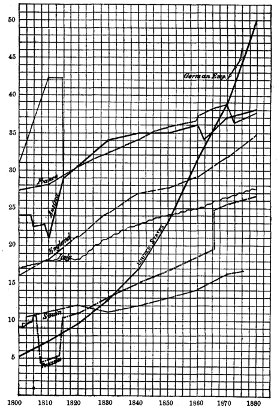
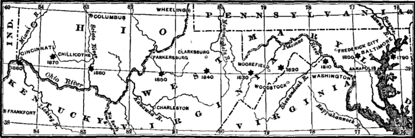

Chapter 7: Of The Law Of The Increase Of Labor¶
7.1 § 1. The Law of the Increase of Production Depends on those of Three Elements—Labor. Capital, and Land¶
Production is not a fixed but an increasing thing. When not kept back by bad institutions, or a low state of the arts of life, the produce of industry has usually tended to increase; stimulated not only by the desire of the producers to augment their means of consumption, but by the increasing number of the consumers.
We have seen that the essential requisites of production are three—labor, capital, and natural agents; the term capital including all external and physical requisites which are products of labor, the term natural agents all those which are not. The increase of production, therefore, depends on the properties of these elements. It is a result of the increase either of the elements themselves, or of their productiveness. We proceed to consider the three elements successively, with reference to this effect; or, in other words, the law of the increase of production, viewed in respect of its dependence, first on Labor, secondly on Capital, and lastly on Land.
7.2 § 2. The Law of Population¶
The increase of labor is the increase of mankind; of population. The power of multiplication inherent in all organic life may be regarded as infinite. There are many species of vegetables of which a single plant will produce in one year the germs of a thousand; if only two come to maturity, in fourteen years the two will have multiplied to sixteen thousand and more. It is but a moderate case of fecundity in animals to be capable of quadrupling their numbers in a single year; if they only do as much in half a century, ten thousand will have swelled within two centuries to upward to two millions and a half. The capacity of increase is necessarily in a geometrical progression: the numerical ratio alone is different.
To this property of organized beings, the human species forms no exception. Its power of increase is indefinite, and the actual multiplication would be extraordinarily rapid, if the power were exercised to the utmost. It never is exercised to the utmost, and yet, in the most favorable circumstances known to exist, which are those of a fertile region colonized from an industrious and civilized community, population has continued, for several generations, independently of fresh immigration, to double itself in not much more than twenty years.
| Years. | Population. | Food. |
|---|---|---|
| 25 | 11 mills | x |
| 25 | 22 mills | 2x |
| 25 | 44 mills | 3x |
| 25 | 88 mills | 4x |
| 25 | 176 mills | 5x |
By this table it will be seen that if population can double itself in twenty-five years, and if food can only be increased by as much as x (the subsistence of eleven millions) by additional application of another equal quantity of labor on the same land in each period, then at the end of one hundred years there would be the disproportion of one hundred and seventy-six millions of people, with subsistence for only fifty-five millions. Of course, this is prevented either by checking population to the amount of the subsistence; by sending off the surplus population; or by bringing in food from new lands.
In the United States to 1860 population has doubled itself about every twenty years, while in France there is practically no increase of population. It is stated that the white population of the United States between 1790 and 1840 increased 400.4 per cent, deducting immigration. The extraordinary advance of population with us, where subsistence is easily attainable, is to be seen in the chart on the next page (No. III), which shows the striking rapidity of increase in the United States when compared with the older countries of Europe. The steady demand for land can be seen by the gradual westward movement of the center of population, as seen in chart No. IV (p. 116), and by the rapid settlement of the distant parts of our country, as shown by the two charts (frontispieces), which represent to the eye by heavier colors the areas of the more densely settled districts in 1830 and in 1880.

7.3 § 3. By what Checks the Increase of Population is Practically Limited¶
The obstacle to a just understanding of the subject arises from too confused a notion of the causes which, at most times and places, keep the actual increase of mankind so far behind the capacity.
The conduct of human creatures is more or less influenced by foresight of consequences, and by some impulses superior to mere animal instincts; and they do not, therefore, propagate like swine, but are capable, though in very unequal degrees, of being withheld by prudence, or by the social affections, from giving existence to beings born only to misery and premature death.
Malthus found an explanation of the anomaly that in the Swiss villages, with the longest average duration of life, there were the fewest births, by noting that no one married until a cow-herd's cottage became vacant, and precisely because the tenants lived so long were the new-comers long kept out of a place.
In proportion as mankind rise above the condition of the beast, population is restrained by the fear of want, rather than by want itself. Even where there is no question of starvation, many are similarly acted upon by the apprehension of losing what have come to be regarded as the decencies of their situation in life. Among the middle classes, in many individual instances, there is an additional restraint exercised from the desire of doing more than maintaining their circumstances—of improving them; but such a desire is rarely found, or rarely has that effect, in the laboring-classes. If they can bring up a family as they were themselves brought up, even the prudent among them are usually satisfied. Too often they do not think even of that, but rely on fortune, or on the resources to be found in legal or voluntary charity.

This, in effect, is the well-known Malthusian doctrine. The thorough reader will also consult the original “Essay” of Malthus. Mr. Bowen1 and other writers oppose it, saying it has “no relation to the times in which we live, or to any which are near at hand.” He thinks the productive power of the whole world prevents the necessity of considering the pressure of population upon subsistence as an actuality now or in the future. This, however, does not deny the existence of Malthus's principles, but opposes them only on the methods of their action. Mr. Rickards2 holds that man's food—as, e.g., wheat—has the power to increase geometrically faster than man; but he omits to consider that for the growth of this food land is demanded; that land is not capable of such geometrical increase; and that without it the food can not be grown. Of course, any extension of the land area, as happened when England abolished the corn laws and drew her food from our prairies, removes the previous pressure of population on subsistence. No believer in the Malthusian doctrine is so absurd as to hold that the growth of population actually exceeds subsistence, but that there is a “constant tendency in all animated life to increase beyond the nourishment prepared for it,” no one can possibly doubt. This is not inconsistent with the fact that subsistence has at any time increased faster than population. It is as if a block of wood on the floor were acted on by two opposing forces, one tending to move it forward, one backward: if it moves backward, that does not prove the absence of any force working to move it forward, but only that the other force is the stronger of the two, and that the final motion is the resultant of the two forces. It is only near-sighted generalization to say that since the block moves forward, there is therefore no opposing force to its advance.3 Mr. Doubleday maintains that, as people become better fed, they become unprolific. Mr. Mill's answer, referring to the large families of the English peerage, is unfortunate.4 In Sweden the increase of the peasantry is six times that of the middle classes, and fourteen times that of the nobility. The diminishing fertility of New England families gives a truer explanation, when it is seen that with the progress in material wealth later marriages are the rule. When New-Englanders emigrate to the Western States, where labor is in demand and where it is less burdensome to have large families, there is no question as to their fertility.5
(1.) In a very backward state of society, like that of Europe in the middle ages, and many parts of Asia at present, population is kept down by actual starvation. The starvation does not take place in ordinary years, but in seasons of scarcity, which in those states of society are much more frequent and more extreme than Europe is now accustomed to. (2.) In a more improved state, few, even among the poorest of the people, are limited to actual necessaries, and to a bare sufficiency of those: and the increase is kept within bounds, not by excess of deaths, but by limitation of births.6 The limitation is brought about in various ways. In some countries, it is the result of prudent or conscientious self-restraint. There is a condition to which the laboring-people are habituated; they perceive that, by having too numerous families, they must sink below that condition, or fail to transmit it to their children; and this they do not choose to submit to.
There are other cases in which the prudence and forethought, which perhaps might not be exercised by the people themselves, are exercised by the state for their benefit; marriage not being permitted until the contracting parties can show that they have the prospect of a comfortable support. There are places, again, in which the restraining cause seems to be not so much individual prudence, as some general and perhaps even accidental habit of the country. In the rural districts of England, during the last century, the growth of population was very effectually repressed by the difficulty of obtaining a cottage to live in. It was the custom for unmarried laborers to lodge and board with their employers; it was the custom for married laborers to have a cottage: and the rule of the English poor-laws, by which a parish was charged with the support of its unemployed poor, rendered land-owners averse to promote marriage. About the end of the century, the great demand for men in war and manufactures made it be thought a patriotic thing to encourage population: and about the same time the growing inclination of farmers to live like rich people, favored as it was by a long period of high prices, made them desirous of keeping inferiors at a greater distance, and, pecuniary motives arising from abuses of the poor-laws being superadded, they gradually drove their laborers into cottages, which the landowners now no longer refused permission to build.
It is but rarely that improvements in the condition of the laboring-classes do anything more than give a temporary margin, speedily filled up by an increase of their numbers. Unless, either by their general improvement in intellectual and moral culture, or at least by raising their habitual standard of comfortable living, they can be taught to make a better use of favorable circumstances, nothing permanent can be done for them; the most promising schemes end only in having a more numerous but not a happier people. There is no doubt that [the standard] is gradually, though slowly, rising in the more advanced countries of Western Europe.7 Subsistence and employment in England have never increased more rapidly than in the last forty years, but every census since 1821 showed a smaller proportional increase of population than that of the period preceding; and the produce of French agriculture and industry is increasing in a progressive ratio, while the population exhibits, in every quinquennial census, a smaller proportion of births to the population.
This brings forward the near connection between land-tenures and population. France is pre-eminently a country of small holdings, and it is undoubtedly true that the system has checked the thoughtless increase of numbers. On his few hectares, the French peasant sees in the size of his farm and the amount of its produce the limit of subsistence for himself and his family; as in no other way does he see beforehand the results of any lack of food from his lack of prudence.8 From 1790 to 1815 the average yearly increase of population was 120,000; from 1815 to 1846, the golden age of French agriculture, 200,000; from 1846 to 1856, when agriculture was not prosperous, 60,000; from 1856 to 1880 the increase has been not more than 36,000 yearly. In France the question shapes itself to the peasant proprietor, How many can be subsisted by the amount of produce, not on an unlimited area of land in other parts of the world, but on this particular property of a small size? While in England there are ten births to six deaths, in France there are about ten births to every nine deaths.9 In no country has the doctrine of Malthus been more attacked than in France, and yet in no other country has there been a more marked obedience to its principles in actual practice. Since the French are practically not at all an emigrating people, population has strictly adapted itself to subsistence. For the relative increase of population in France and the United States, see also the movement of lines indicating the increase of population in chart No. III (p. 114).
-
“American Political Economy,” p. 134. See also an article, “Malthusianism, Darwinism, and Pessimism,” “North American Review,” November, 1879. ↩
-
See Cairnes, “Logical Method,” pp. 170-177. ↩
-
See also Walker's “Wages Question,” chap. vi, and Roscher, “Political Economy,” book v, chaps. i, ii, iii. ↩
-
See Galton's “Hereditary Genius,” p. 131-135. ↩
-
See also Edward Jarvis, “Atlantic Monthly,” 1872, and F. A. Walker, “Social Science Journal,” vol. v, 1873, p. 71. For other literature, see “Sketch of the History of Political Economy,” p. 16. ↩
-
This is the “preventive check” of Mr. Malthus, while the limitation through war, starvation, etc., is the “positive check.” ↩
-
This is fully confirmed by the inaugural address of Mr. Giffen as President of the London Statistical Society, November 20, 1883, infra, book iv, chap. v, § 1. (See the London “Statistical Journal,” 1883.) ↩
-
See Lavergne's “Agriculture et Population,” pp. 305-316. ↩
-
For tables of relative births and deaths, see “Statesman's Year-Book,” p. 253. ↩